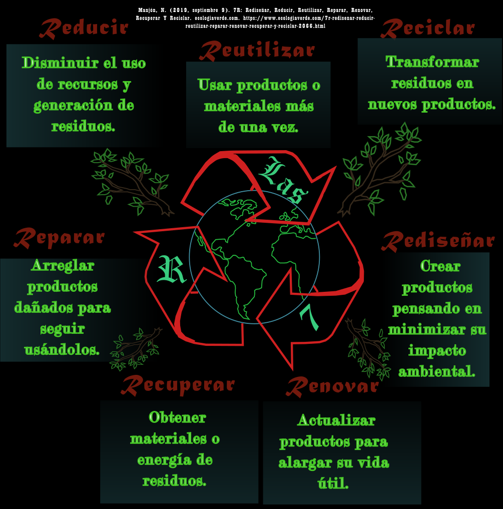
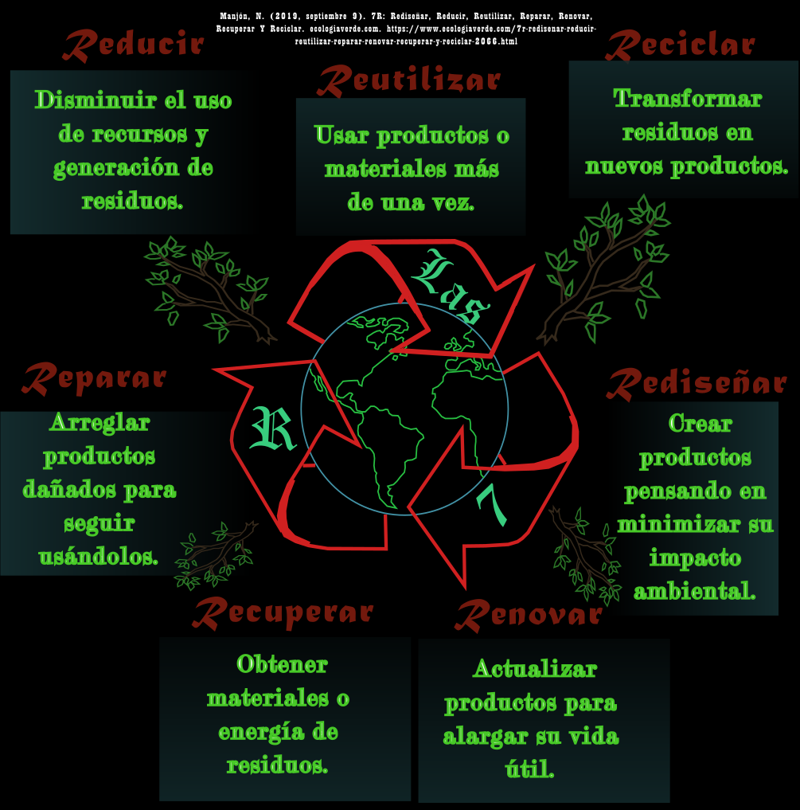

¿Qué pasa si no aplicamos las 7Rs?
En Ciudad Serdán, el no aplicar las 7R (Rediseñar, Reducir, Reutilizar, Reparar, Renovar, Reciclar y Recuperar) ha contribuido a problemas ambientales como la acumulación de basura en las calles, y el aumento en los niveles de contaminación del aire. Esto afecta directamente a nuestra salud y calidad de vida.

¿Cómo aplicar correctamente las 7R?
Para aplicar las 7R de manera efectiva, podemos:
- Rediseñar: Elegir productos con menos empaque y más sostenibles.
- Reducir: Evitar el consumo innecesario, especialmente de plásticos.
- Reutilizar: Dar un nuevo uso a objetos antes de desecharlos.
- Reparar: Arreglar aparatos o ropa en lugar de comprar nuevos.
- Renovar: Modernizar cosas viejas para que sigan siendo útiles.
- Reciclar: Separar y entregar residuos a centros de reciclaje.
- Recuperar: Usar residuos como materia prima para nuevos productos.
¿Cómo motivar a otras personas?
Podemos influir en nuestra comunidad compartiendo información en redes sociales, organizando campañas de limpieza, dando el ejemplo desde casa y en la escuela, y colaborando con organizaciones locales. La educación ambiental desde temprana edad es clave para lograr un cambio sostenible.
 
Regresar página central>

Regresar página central>